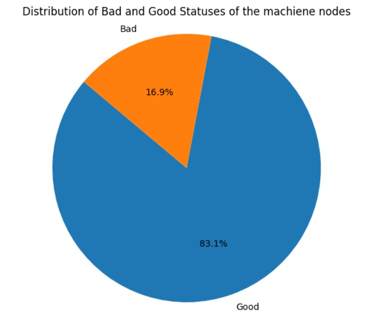
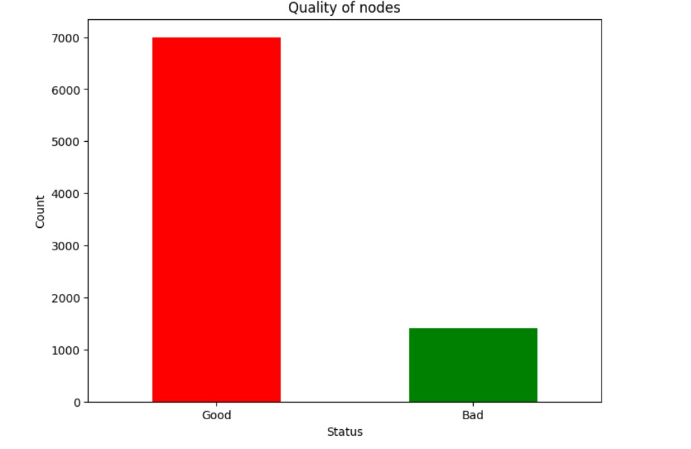

| # | Nodes needing repair | Nodes not needing repair |
|---|---|---|
| 0 | Axis/Drive/AXIS_NUMBER_FOR_MONITORING | Axis/Drive/AA_OFF_MODE |
| 1 | Axis/Drive/GAIN_FOR_MONITORING | Axis/Drive/CTRLOUT_MODULE_NR |
| 2 | Channel/Configuration/mmcCmdQuit | Axis/Drive/AC_FILTER_TIME |
| 3 | Channel/CoordSysWorkAreaLimits/waCSCoordSys | Axis/Drive/AX_MOTION_DIR |
| 4 | Channel/CoordSysWorkAreaLimits/waCSLimitMinus | Axis/Drive/AA_OFF_MODE |
| 5 | Channel/CoordSysWorkAreaLimits/waCSLimitPlus | Axis/Drive/CTRLOUT_TYPE |
| 6 | Channel/CoordSysWorkAreaLimits/waCSMinusEnable | Axis/Drive/DISPLAY_IS_MODULO |
| 7 | Channel/CoordSysWorkAreaLimits/waCSPlusEnable | Axis/Drive/ENC_MODULE_NR |
| 8 | Axis/Drive/OFFSETVALUE_FOR_MONITORING | Axis/Drive/ENC_TYPE |
| 9 | Channel/ProtectedArea/MDD_PA_CONT_ABS_5 | Axis/Drive/FFW_MODE |
| 10 | Channel/ProtectedArea/MDD_PA_CONT_ABS_6 | Axis/Drive/GANTRY_AXIS_TYPE |
| 11 | Channel/ProtectedArea/MDD_PA_CONT_ABS_7 | Channel/Configuration/mmcCmdQuitPrep |
| 12 | Channel/ProtectedArea/MDD_PA_CONT_ABS_8 | Channel/Configuration/numActAxes |
| 13 | Channel/ProtectedArea/MDD_PA_CONT_ABS_9 | Channel/Configuration/numAuxAxes |
| 14 | Channel/ProtectedArea/MDD_PA_CONT_ORD_0 | Channel/Configuration/numBasisFrames |
| 15 | Channel/ProtectedArea/MDD_PA_CONT_ORD_1 | Channel/Configuration/numContourInProtArea |
| 16 | Channel/ProtectedArea/MDD_PA_CONT_ORD_2 | Channel/Configuration/numGeoAxes |
| 17 | Channel/ProtectedArea/MDD_PA_CONT_ORD_3 | Channel/Configuration/numMachAxes |
| 18 | Channel/ProtectedArea/MDD_PA_CONT_ORD_4 | Channel/Configuration/numOriAxes |
| 19 | Channel/ProtectedArea/MDD_PA_CONT_ORD_5 | Channel/Configuration/numProtArea |
| 20 | Channel/ProtectedArea/MDD_PA_CONT_ORD_6 | Channel/Configuration/numRParams |
| 21 | Channel/ProtectedArea/MDD_PA_CONT_ORD_7 | Channel/Configuration/numSpindles |
| 22 | Channel/ProtectedArea/MDD_PA_CONT_ORD_8 | Channel/Configuration/numSpindlesLog |
| 23 | Channel/ProtectedArea/MDD_PA_CONT_ORD_9 | Channel/Configuration/numToolEdges |
| 24 | Channel/ProtectedArea/MDD_PA_MINUS_LIM | Channel/Configuration/numUserFrames |
| 25 | Channel/ProtectedArea/MDD_PA_PLUS_LIM | Channel/Configuration/oemProtText |
| 26 | Channel/ProtectedArea/MDU_PA_ACTIV_IMMED | Channel/Configuration/progProtText |
| 27 | Channel/ProtectedArea/MDU_PA_CONT_NUM | Channel/Configuration/punchNibActivation |
| 28 | Channel/ProtectedArea/MDU_PA_CONT_TYP_0 | Channel/Configuration/stringIsFileId |
| 29 | Channel/ProtectedArea/MDU_PA_CONT_TYP_1 | Channel/Configuration/stringIsMeaning |
| 30 | Channel/ProtectedArea/MDU_PA_CONT_TYP_2 | Channel/Configuration/stringIsSymbolId |
| 31 | Channel/ProtectedArea/MDU_PA_CONT_TYP_3 | Channel/Configuration/systemFrameMask |
| 32 | Channel/ProtectedArea/MDU_PA_CONT_TYP_4 | Channel/Configuration/toNo |
| 33 | Channel/ProtectedArea/MDU_PA_CONT_TYP_5 | Channel/Configuration/toolDataChangeBufferSize |
| 34 | Channel/ProtectedArea/MDU_PA_CONT_TYP_6 | Channel/Diagnose/COTraceFlags |
| 35 | Channel/ProtectedArea/MDU_PA_CONT_TYP_7 | Channel/Diagnose/actCycleTimeBrut |
| 36 | Channel/Diagnose/varAccessError | Channel/Diagnose/actCycleTimeNet |
| 37 | Channel/ExternFrame/otationCoordinate | Channel/Diagnose/availableBodies |
| 38 | Channel/GenericCoupling/aaCplRS | Channel/Diagnose/bodySize |
| 39 | Channel/GeometricAxis/effComp | Channel/Diagnose/coCliStiCounterMax |
| 40 | Channel/GrindingFrame/linShift | Channel/Diagnose/coCliTimestampMax |
| 41 | Channel/GrindingFrame/linShiftFine | Channel/Diagnose/coCliTimestampMaxStartup |
| 42 | Channel/GrindingFrame/mirrorImgActive | Channel/Diagnose/countOfFreeByteBrut |
| 43 | Channel/GrindingFrame/rotation | Channel/Diagnose/fifoFileActNetData |
| 44 | Channel/GrindingFrame/rotationCoordinate | Channel/Diagnose/handleDebugFlags |
| 45 | Channel/GrindingFrame/scaleFact | Channel/Diagnose/interferenceCheckOn |
| 46 | Channel/MachineAxis/aaDesValFiltersSelect | Channel/Diagnose/internalBlockNumber |
| 47 | Channel/MachineAxis/resolvStatus1 | Channel/Diagnose/ipoBufLevel |
| 48 | Channel/MachineAxis/resolvStatus2 | Channel/Diagnose/ipoCounter |
| 49 | Channel/MachineAxis/vaCAdaptAccDynFinish | Axis/Drive/AC_FILTER_TIME |
| 50 | Channel/MachineAxis/vaCAdaptAccDynNorm | Axis/Drive/IS_ROT_AX |
| 51 | Channel/MachineAxis/vaCAdaptAccDynPos | Axis/Drive/LOAD_SMOOTH_FILTER_TIME |
| 52 | Channel/MachineAxis/vaCAdaptAccDynPrec | Axis/Drive/MDCA_CTRLOUT_MODULE_NR |
| 53 | Channel/MachineAxis/vaCAdaptAccDynRough | Axis/Drive/MDCA_CTRLOUT_TYPE |
| 54 | Channel/MachineAxis/vaCAdaptAccDynSemiFin | Axis/Drive/MDCA_ENC_MODULE_NR |
| 55 | Channel/MachineAxis/vaCAdaptDrvAdapt1 | Axis/Drive/MDCA_ENC_TYPE |
| 56 | Channel/MachineAxis/vaCAdaptDrvAdapt2 | Axis/Drive/MODULO_RANGE |
| 57 | Channel/MachineAxis/vaCAdaptDrvAdapt3 | Axis/Drive/POS_LIMIT_MINUS |
| 58 | Channel/MachineAxis/vaCAdaptDrvAdapt4 | Axis/Drive/POS_LIMIT_PLUS |
| 59 | Channel/MachineAxis/vaCAdaptFfwTorqueFact | Axis/Drive/POWER_SMOOTH_FILTER_TIME |
| 60 | Channel/MachineAxis/vaCAdaptInputLoad | Axis/Drive/ROT_IS_MODULO |
| 61 | Channel/MachineAxis/vaCAdaptIsActive | Axis/Drive/SAFE_ACT_CHECKSUM |
| 62 | Channel/MachineAxis/vaCAdaptJerkDynFinish | Axis/Drive/SAFE_CAM_ENABLE |
| 63 | Channel/MachineAxis/vaCAdaptJerkDynNorm | Axis/Drive/SAFE_CONFIG_CHANGE_DATE |
| 64 | Channel/MachineAxis/vaCAdaptJerkDynPos | Axis/Drive/SAFE_DES_VELO_LIMIT |
| 65 | Channel/MachineAxis/vaCAdaptJerkDynPrec | Axis/Drive/SAFE_FUNCTION_ENABLE |
| 66 | Channel/MachineAxis/vaCAdaptJerkDynRough | Axis/Drive/SAFE_VELO_OVR_FACTOR |
| 67 | Channel/MachineAxis/vaCAdaptJerkDynSemiFin | Axis/Drive/SPIND_ASSIGN_TO_MACHAX |
| 68 | Channel/MachineAxis/vaCAdaptPosCtrlGain | Axis/Settings/AA_OFF_LIMIT |
| 69 | Channel/MachineAxis/vaDesValFiltersActive | Axis/Settings/MDB_WORKAREA_MINUS_ENABLE |
| 70 | Channel/MachineAxis/vaDesValFiltersDelay1 | Axis/Settings/MDB_WORKAREA_PLUS_ENABLE |
| 71 | Channel/MachineAxis/vaDesValFiltersDelay2 | Axis/Settings/MDD_SPIND_MAX_VELO_G26 |
| 72 | Channel/MachineAxis/vaDesValFiltersDeltaPos | Axis/Settings/MDD_SPIND_MAX_VELO_LIMS |
| 73 | Channel/ProgramModification/cfgStopActive | Axis/Settings/MDD_SPIND_MIN_VELO_G25 |
| 74 | Channel/ProtectedArea/MDD_PA_CENT_ABS_0 | Axis/Settings/MDD_WORKAREA_LIMIT_MINUS |
| 75 | Channel/ProtectedArea/MDD_PA_CENT_ABS_1 | Axis/Settings/MDD_WORKAREA_LIMIT_PLUS |
| 76 | Channel/ProtectedArea/MDD_PA_CENT_ABS_2 | Axis/Settings/SPIND_MAX_VELO_G26 |
| 77 | Channel/ProtectedArea/MDD_PA_CENT_ABS_3 | Axis/Settings/SPIND_MAX_VELO_LIMS |
| 78 | Channel/ProtectedArea/MDD_PA_CENT_ABS_4 | Axis/Settings/SPIND_MIN_VELO_G25 |
| 79 | Channel/ProtectedArea/MDD_PA_CENT_ABS_5 | Axis/Settings/WORKAREA_LIMIT_MINUS |
| 80 | Channel/ProtectedArea/MDD_PA_CENT_ABS_6 | Axis/Settings/WORKAREA_LIMIT_PLUS |
| 81 | Channel/ProtectedArea/MDD_PA_CENT_ABS_7 | Axis/Settings/WORKAREA_MINUS_ENABLE |
| 82 | Channel/ProtectedArea/MDD_PA_CENT_ABS_8 | Axis/Settings/WORKAREA_PLUS_ENABLE |
| 83 | Channel/ProtectedArea/MDD_PA_CENT_ABS_9 | Bag/State/autoJogState |
| 84 | Channel/ProtectedArea/MDD_PA_CENT_ORD_0 | Bag/State/ncAutoCounter |
| 85 | Channel/ProtectedArea/MDD_PA_CENT_ORD_1 | Bag/State/ncJogCounter |
| 86 | Channel/ProtectedArea/MDD_PA_CENT_ORD_2 | Bag/State/ncMDACounter |
| 87 | Channel/ProtectedArea/MDD_PA_CENT_ORD_3 | Bag/State/opMode |
| 88 | Channel/ProtectedArea/MDD_PA_CENT_ORD_4 | Bag/State/readyActive |
| 89 | Channel/ProtectedArea/MDD_PA_CENT_ORD_5 | Bag/State/resetActive |
| 90 | Channel/ProtectedArea/MDD_PA_CENT_ORD_6 | Channel/ActualFrame/linShift |
| 91 | Channel/ProtectedArea/MDD_PA_CENT_ORD_7 | Channel/ActualFrame/linShiftFine |
| 92 | Channel/ProtectedArea/MDD_PA_CENT_ORD_8 | Channel/ActualFrame/mirrorImgActive |
| 93 | Channel/ProtectedArea/MDD_PA_CENT_ORD_9 | Channel/ActualFrame/rotation |
| 94 | Channel/ProtectedArea/MDD_PA_CONT_ABS_0 | Channel/ActualFrame/rotationCoordinate |
| 95 | Channel/ProtectedArea/MDD_PA_CONT_ABS_1 | Channel/ActualFrame/scaleFact |
| 96 | Channel/ProtectedArea/MDD_PA_CONT_ABS_2 | Channel/AuxiliaryFunctions/extension |
| 97 | Channel/ProtectedArea/MDD_PA_CONT_ABS_3 | Channel/AuxiliaryFunctions/status |
| 98 | Channel/ProtectedArea/MDD_PA_CONT_ABS_4 | Channel/AuxiliaryFunctions/type |
| 99 | Channel/ProtectedArea/MDU_PA_CONT_TYP_8 | Channel/AuxiliaryFunctions/valueDo |
| 100 | Channel/ProtectedArea/MDU_PA_CONT_TYP_9 | Channel/AuxiliaryFunctions/valueLo |
| 101 | Channel/ProtectedArea/MDU_PA_DUMMY | Channel/BaseFrame/linShift |
| 102 | Channel/ProtectedArea/MDU_PA_LIM_3DIM | Channel/BaseFrame/linShiftFine |
| 103 | Channel/ProtectedArea/MDU_PA_ORI | Channel/BaseFrame/mirrorImgActive |
| 104 | Channel/ProtectedArea/MDU_PA_TW | Channel/BaseFrame/rotation |
| 105 | Channel/ProtectedArea/fixtureStatus | Channel/BaseFrame/rotationCoordinate |
| 106 | Channel/ProtectedArea/workpieceStatus | Channel/BaseFrame/scaleFact |
| 107 | Channel/SelectedFunctionData/acFifoN | Channel/ChannelDiagnose/acIpoBuf |
| 108 | Channel/SelectedFunctionData/acSystemMarkerL | Channel/ChannelDiagnose/actCycleTimeBrut |
| 109 | Channel/SelectedFunctionData/acSystemParam | Channel/ChannelDiagnose/actCycleTimeNet |
| 110 | Channel/State/acCTolG0 | Channel/ChannelDiagnose/aveCycleTimeNet |
| 111 | Channel/State/acOTolG0 | Channel/ChannelDiagnose/cuttingTime |
| 112 | Channel/State/acTrafoCorrElemP0 | Channel/ChannelDiagnose/cycleTime |
| 113 | Channel/State/acTrafoCorrElemP1 | Channel/ChannelDiagnose/ipoBufLevel |
| 114 | Channel/State/acTrafoCorrElemP2 | Channel/ChannelDiagnose/maxCycleTimeBrut |
| 115 | Channel/State/acTrafoCorrElemP3 | Channel/ChannelDiagnose/maxCycleTimeBrutPo |
| 116 | Channel/State/acTrafoCorrElemT0 | Channel/ChannelDiagnose/maxCycleTimeNet |
| 117 | Channel/State/acTrafoCorrElemT1 | Channel/ChannelDiagnose/maxCycleTimeNetPo |
| 118 | Channel/State/acTrafoCorrElemT2 | Channel/ChannelDiagnose/minCycleTimeBrut |
| 119 | Channel/State/acTrafoCorrElemT3 | Channel/ChannelDiagnose/minCycleTimeBrutPo |
| 120 | Channel/State/acTrafoOriaxDirP0 | Channel/ChannelDiagnose/minCycleTimeNet |
| 121 | Channel/State/acTrafoOriaxDirP1 | Channel/ChannelDiagnose/minCycleTimeNetPo |
| 122 | Channel/State/acTrafoOriaxDirP2 | Channel/ChannelDiagnose/operatingTime |
| 123 | Channel/State/acTrafoOriaxDirT0 | Channel/ChannelDiagnose/sumCycleTimeNet |
| 124 | Channel/State/acTrafoOriaxDirT1 | Channel/ChannelDiagnose/taskAvailable |
| 125 | Channel/State/acTrafoOriaxDirT2 | Channel/ChannelDiagnose/taskName |
| 126 | Channel/State/acTrafoSectionP0 | Channel/Compensation/cuttEdgeParam |
| 127 | Channel/State/acTrafoSectionP1 | Channel/Compensation/cuttEdgeParamMod |
| 128 | Channel/State/acTrafoSectionP2 | Channel/Configuration/channelName |
| 129 | Channel/State/acTrafoSectionP3 | Channel/Configuration/maskToolManagement |
| 130 | Channel/State/acTrafoSectionT0 | Channel/Configuration/mmcCmd |
| 131 | Channel/State/acTrafoSectionT1 | Channel/Configuration/mmcCmdPrep |
| 132 | Channel/State/acTrafoSectionT2 | Channel/Diagnose/maxAllocBodies |
| 133 | Channel/State/acTrafoSectionT3 | Channel/Diagnose/maxCycleTimeBrut |
| 134 | Channel/State/cmdToolEdgeCenterPosBcsPathn1 | Channel/Diagnose/maxCycleTimeNet |
| 135 | Channel/State/cmdToolEdgeCenterPosMcsPathn1 | Channel/Diagnose/minCycleTimeBrut |
| 136 | Channel/State/pcTrafoRotChanAxEx | Channel/Diagnose/minCycleTimeNet |
| 137 | Channel/State/pcTrafoRotChanAxIn | Channel/Diagnose/ncscTraceCounter |
| 138 | Channel/State/speedCtrlSpindlesMask | Channel/Diagnose/nextSLSubtype |
| 139 | Channel/State/tOffCR | Channel/Diagnose/numConfigBodies |
| 140 | DriveVsa/CuLinkPre/103 | Channel/Diagnose/protocVLTime |
| 141 | DriveVsa/CuLinkPre/4955 | Channel/Diagnose/reposCounter |
| 142 | DriveVsa/CuLinkPre/4956 | Channel/Diagnose/resetCounter |
| 143 | DriveVsa/CuPre/4955 | Channel/Diagnose/stackSizeUsed |
| 144 | DriveVsa/CuPre/4956 | Channel/Diagnose/testInchMetr |
| 145 | DriveVsa/DcPre/4955 | Channel/Diagnose/testReqVarServerSuppr |
| 146 | DriveVsa/DcPre/4956 | Channel/Diagnose/theErrorObjOK |
| 147 | DriveVsa/LmPre/4955 | Channel/Drive/AUXFU_ASSOC_M1_VALUE |
| 148 | DriveVsa/LmPre/4956 | Channel/Drive/AXCONF_CHANAX_NAME_TAB |
| 149 | DriveVsa/TbPre/103 | Channel/Drive/AXCONF_GEOAX_ASSIGN_TAB |
| 150 | DriveVsa/TbPre/3954 | Channel/Drive/AXCONF_GEOAX_NAME_TAB |
| 151 | DriveVsa/TbPre/4950 | Channel/Drive/AXCONF_MACHAX_USED |
| 152 | DriveVsa/TbPre/4951 | Channel/Drive/CHAN_NAME |
| 153 | DriveVsa/TbPre/4955 | Channel/Drive/CIRCLE_ERROR_CONST |
| 154 | DriveVsa/TbPre/4956 | Channel/Drive/CIRCLE_ERROR_FACTOR |
| 155 | DriveVsa/TmPre/103 | Channel/Drive/DIAMETER_AX_DEF |
| 156 | DriveVsa/TmPre/3954 | Channel/Drive/FRAME_SUPPRESS_MODE |
| 157 | DriveVsa/TmPre/4950 | Channel/Drive/MDC_TECHNOLOGY_MODE |
| 158 | DriveVsa/TmPre/4951 | Channel/Drive/MDS_CHAN_NAME |
| 159 | DriveVsa/TmPre/4955 | Channel/Drive/MM_ABSBLOCK |
| 160 | DriveVsa/TmPre/4956 | Channel/Drive/MM_PROTOC_NUM_ETP_STD_TYP |
| 161 | NC/_N_CH_GD1_ACX/E_MESS_RETT | Channel/Drive/MM_SYSTEM_DATAFRAME_MASK |
| 162 | NC/_N_CH_GD1_ACX/_F_S_AX | Channel/Drive/PROTOC_NUM_ETP_STD_TYP |
| 163 | NC/_N_CH_GD1_ACX/_F_TRA_WP_FR | Channel/Drive/TECHNOLOGY_MODE |
| 164 | Hmi/DDSSelForDSA | Channel/Drive/TOOL_CARRIER_RESET_VALUE |
| 165 | Hmi/Diagnostics/Alarms | Channel/Drive/TOOL_PARAMETER_DEF_MASK |
| 166 | Hmi/HmiPro_Sel_Chan_Axis | Channel/Drive/TRACYL_ROT_AX_OFFSET_1 |
| 167 | Hmi/MDSSelForDSA | Channel/Drive/TRACYL_ROT_AX_OFFSET_2 |
| 168 | Hmi/PrintDataRequest | Channel/Drive/TRACYL_ROT_SIGN_IS_PLUS_1 |
| 169 | Hmi/PrintDataState | Channel/Drive/TRACYL_ROT_SIGN_IS_PLUS_2 |
| 170 | Hmi/PrintingPossible | Channel/Drive/TRAFO5_AXIS1_1 |
| 171 | Hmi/SlTrace | Channel/Drive/TRAFO5_AXIS1_2 |
| 172 | Hmi/StepEditorInfo | Channel/Drive/TRAFO5_AXIS1_3 |
| 173 | Hmi/TMHMICurData | Channel/Drive/TRAFO5_AXIS1_4 |
| 174 | Hmi/ToolEdgeReplacementReason | Channel/Drive/TRAFO5_AXIS2_1 |
| 175 | Nck/ActualFrame/linShift | Channel/Drive/TRAFO5_AXIS2_2 |
| 176 | Nck/ActualFrame/linShiftFine | Channel/Drive/TRAFO5_AXIS2_3 |
| 177 | Nck/ActualFrame/mirrorImgActive | Channel/Drive/TRAFO5_AXIS2_4 |
| 178 | Nck/ActualFrame/rotation | Channel/Drive/TRAFO5_ROT_AX_OFFSET_3 |
| 179 | Nck/ActualFrame/rotationCoordinate | Channel/Drive/TRAFO5_ROT_AX_OFFSET_4 |
| 180 | Nck/ActualFrame/scaleFact | Channel/Drive/TRAFO5_ROT_SIGN_IS_PLUS_3 |
| 181 | Nck/AlarmEvent/timeBCD | Channel/Drive/TRAFO5_ROT_SIGN_IS_PLUS_4 |
| 182 | Nck/BaseFrame/linShift | Channel/Drive/TRAFO_AXES_IN_1 |
| 183 | Nck/BaseFrame/linShiftFine | Channel/Drive/TRAFO_AXES_IN_10 |
| 184 | Nck/BaseFrame/mirrorImgActive | Channel/Drive/TRAFO_AXES_IN_11 |
| 185 | Nck/BaseFrame/rotation | Channel/Drive/TRAFO_AXES_IN_12 |
| 186 | Nck/BaseFrame/rotationCoordinate | Channel/Drive/TRAFO_AXES_IN_13 |
| 187 | Nck/BaseFrame/scaleFact | Channel/Drive/TRAFO_AXES_IN_14 |
| 188 | Nck/ChannelDiagnose/dp611USpecAccChangeCnt | Channel/Drive/TRAFO_AXES_IN_15 |
| 189 | Nck/ChannelDiagnose/dp611USpecAccKey | Channel/Drive/TRAFO_AXES_IN_16 |
| 190 | Nck/ChannelDiagnose/dp611USpecAccMask | Channel/Drive/TRAFO_AXES_IN_17 |
| 191 | Nck/ChannelDiagnose/dp611USpecAccPath | Channel/Drive/TRAFO_AXES_IN_18 |
| 192 | Nck/ChannelDiagnose/noOfPersistencyCollisions | Channel/Drive/TRAFO_AXES_IN_19 |
| 193 | Nck/Configuration/exportRestricted | Channel/Drive/TRAFO_AXES_IN_2 |
| 194 | Nck/Drive/DRIVE_INVERTER_CODE | Channel/Drive/TRAFO_AXES_IN_20 |
| 195 | Nck/Drive/DRIVE_LOGIC_NR | Channel/Drive/TRAFO_AXES_IN_3 |
| 196 | Nck/Drive/DRIVE_MODULE_TYPE | Channel/Drive/TRAFO_AXES_IN_4 |
| 197 | Nck/Drive/DRIVE_TYPE | Channel/Drive/TRAFO_AXES_IN_5 |
| 198 | Nck/Drive/MDCA_DRIVE_LOGIC_NR | Channel/Drive/TRAFO_AXES_IN_6 |
| 199 | Nck/Drive/MDCA_DRIVE_MODULE_TYPE | Channel/Drive/TRAFO_AXES_IN_7 |
| 200 | Nck/Drive/MDCA_DRIVE_TYPE | Channel/Drive/TRAFO_AXES_IN_8 |
| 201 | Nck/Drive/MDLA_DRIVE_INVERTER_CODE | Channel/Drive/TRAFO_AXES_IN_9 |
| 202 | Nck/GenericCoupling/cpCtabId | Channel/Drive/TRAFO_GEOAX_ASSIGN_TAB_1 |
| 203 | Nck/GrindingFrame/linShift | Channel/Drive/TRAFO_GEOAX_ASSIGN_TAB_10 |
| 204 | Nck/GrindingFrame/linShiftFine | Channel/Drive/TRAFO_GEOAX_ASSIGN_TAB_11 |
| 205 | Nck/GrindingFrame/mirrorImgActive | Channel/Drive/TRAFO_GEOAX_ASSIGN_TAB_12 |
| 206 | Nck/GrindingFrame/scaleFact | Channel/Drive/TRAFO_GEOAX_ASSIGN_TAB_13 |
| 207 | Nck/MachineAxis/aaDesValFiltersSelect | Channel/Drive/TRAFO_GEOAX_ASSIGN_TAB_14 |
| 208 | Nck/MachineAxis/resolvStatus1 | Channel/Drive/TRAFO_GEOAX_ASSIGN_TAB_15 |
| 209 | Nck/MachineAxis/resolvStatus2 | Channel/Drive/TRAFO_GEOAX_ASSIGN_TAB_16 |
| 210 | Nck/MachineAxis/vaCAdaptAccDynFinish | Channel/Drive/TRAFO_GEOAX_ASSIGN_TAB_17 |
| 211 | Nck/MachineAxis/vaCAdaptAccDynNorm | Channel/Drive/TRAFO_GEOAX_ASSIGN_TAB_18 |
| 212 | Nck/MachineAxis/vaCAdaptAccDynPos | Channel/Drive/TRAFO_GEOAX_ASSIGN_TAB_19 |
| 213 | Nck/MachineAxis/vaCAdaptAccDynPrec | Channel/Drive/TRAFO_GEOAX_ASSIGN_TAB_2 |
| 214 | Nck/MachineAxis/vaCAdaptAccDynRough | Channel/Drive/TRAFO_GEOAX_ASSIGN_TAB_20 |
| 215 | Nck/MachineAxis/vaCAdaptAccDynSemiFin | Channel/Drive/TRAFO_GEOAX_ASSIGN_TAB_3 |
| 216 | Nck/MachineAxis/vaCAdaptDrvAdapt1 | Channel/Drive/TRAFO_GEOAX_ASSIGN_TAB_4 |
| 217 | Nck/MachineAxis/vaCAdaptDrvAdapt2 | Channel/Drive/TRAFO_GEOAX_ASSIGN_TAB_5 |
| 218 | Nck/MachineAxis/vaCAdaptDrvAdapt3 | Channel/Drive/TRAFO_GEOAX_ASSIGN_TAB_6 |
| 219 | Nck/MachineAxis/vaCAdaptDrvAdapt4 | Channel/Drive/TRAFO_GEOAX_ASSIGN_TAB_7 |
| 220 | Nck/MachineAxis/vaCAdaptFfwTorqueFact | Channel/Drive/TRAFO_GEOAX_ASSIGN_TAB_8 |
| 221 | Nck/MachineAxis/vaCAdaptInputLoad | Channel/Drive/TRAFO_GEOAX_ASSIGN_TAB_9 |
| 222 | Nck/MachineAxis/vaCAdaptIsActive | Channel/Drive/TRAFO_RESET_VALUE |
| 223 | Nck/MachineAxis/vaCAdaptJerkDynFinish | Channel/Drive/TRAFO_TYPE_1 |
| 224 | Nck/MachineAxis/vaCAdaptJerkDynNorm | Channel/Drive/TRAFO_TYPE_10 |
| 225 | Nck/MachineAxis/vaCAdaptJerkDynPos | Channel/Drive/TRAFO_TYPE_11 |
| 226 | Nck/MachineAxis/vaCAdaptJerkDynPrec | Channel/Drive/TRAFO_TYPE_12 |
| 227 | Nck/MachineAxis/vaCAdaptJerkDynRough | Channel/Drive/TRAFO_TYPE_13 |
| 228 | Nck/MachineAxis/vaCAdaptJerkDynSemiFin | Channel/Drive/TRAFO_TYPE_14 |
| 229 | Nck/MachineAxis/vaCAdaptPosCtrlGain | Channel/Drive/TRAFO_TYPE_15 |
| 230 | Nck/MachineAxis/vaDesValFiltersActive | Channel/Drive/TRAFO_TYPE_16 |
| 231 | Nck/MachineAxis/vaDesValFiltersDelay1 | Channel/Drive/TRAFO_TYPE_17 |
| 232 | Nck/MachineAxis/vaDesValFiltersDelay2 | Channel/Drive/TRAFO_TYPE_18 |
| 233 | Nck/MachineAxis/vaDesValFiltersDeltaPos | Channel/Drive/TRAFO_TYPE_19 |
| 234 | Nck/Parameter/RG | Channel/Drive/TRAFO_TYPE_2 |
| 235 | Nck/ProtectedArea/MDD_PA_CENT_ABS_0 | Channel/Drive/TRAFO_TYPE_20 |
| 236 | Nck/ProtectedArea/MDD_PA_CENT_ABS_1 | Channel/Drive/TRAFO_TYPE_3 |
| 237 | Nck/ProtectedArea/MDD_PA_CENT_ABS_2 | Channel/Drive/TRAFO_TYPE_4 |
| 238 | Nck/ProtectedArea/MDD_PA_CENT_ABS_3 | Channel/Drive/TRAFO_TYPE_5 |
| 239 | Nck/ProtectedArea/MDD_PA_CENT_ABS_4 | Channel/Drive/TRAFO_TYPE_6 |
| 240 | Nck/ProtectedArea/MDD_PA_CENT_ABS_4 | Channel/Drive/TRAFO_TYPE_7 |
| 241 | Nck/ProtectedArea/MDD_PA_CENT_ABS_6 | Channel/Drive/TRAFO_TYPE_8 |
| 242 | Nck/ProtectedArea/MDD_PA_CENT_ABS_7 | Channel/Drive/TRAFO_TYPE_9 |
| 243 | Nck/ProtectedArea/MDD_PA_CENT_ABS_8 | Channel/Drive/TRANSMIT_ROT_AX_OFFSET_1 |
| 244 | Nck/ProtectedArea/MDD_PA_CENT_ABS_9 | Channel/Drive/TRANSMIT_ROT_AX_OFFSET_2 |
| 245 | Nck/ProtectedArea/MDD_PA_CENT_ORD_0 | Channel/Drive/TRANSMIT_ROT_SIGN_IS_PLUS_1 |
| 246 | Nck/ProtectedArea/MDD_PA_CENT_ORD_1 | Channel/Drive/TRANSMIT_ROT_SIGN_IS_PLUS_2 |
| 247 | Nck/ProtectedArea/MDD_PA_CENT_ORD_2 | Channel/ExternFrame/linShift |
| 248 | Nck/ProtectedArea/MDD_PA_CENT_ORD_3 | Channel/ExternFrame/linShiftFine |
| 249 | Nck/ProtectedArea/MDD_PA_CENT_ORD_4 | Channel/ExternFrame/mirrorImgActive |
| 250 | Nck/ProtectedArea/MDD_PA_CENT_ORD_5 | Channel/ExternFrame/rotation |
| 251 | Nck/ProtectedArea/MDD_PA_CENT_ORD_6 | Channel/ExternFrame/scaleFact |
| 252 | Nck/ProtectedArea/MDD_PA_CENT_ORD_7 | Channel/GenericCoupling/aaCpActFa |
| 253 | Nck/ProtectedArea/MDD_PA_CENT_ORD_8 | Channel/GenericCoupling/aaCpActLa |
| 254 | Nck/ProtectedArea/MDD_PA_CENT_ORD_9 | Channel/GenericCoupling/aaCpBlockChg |
| 255 | Nck/ProtectedArea/MDD_PA_CONT_ABS_0 | Channel/GenericCoupling/aaCpDefLa |
| 256 | Nck/ProtectedArea/MDD_PA_CONT_ABS_1 | Channel/GenericCoupling/aaCpMAlarm |
| 257 | Nck/ProtectedArea/MDD_PA_CONT_ABS_2 | Channel/GenericCoupling/aaCpMReset |
| 258 | Nck/ProtectedArea/MDD_PA_CONT_ABS_3 | Channel/GenericCoupling/aaCpMStart |
| 259 | Nck/ProtectedArea/MDD_PA_CONT_ABS_4 | Channel/GenericCoupling/aaCpMStartPrt |
| 260 | Nck/ProtectedArea/MDD_PA_CONT_ABS_5 | Channel/GenericCoupling/aaCpMVdi |
| 261 | Nck/ProtectedArea/MDD_PA_CONT_ABS_6 | Channel/GenericCoupling/aaCpNumActFa |
| 262 | Nck/ProtectedArea/MDD_PA_CONT_ABS_7 | Channel/GenericCoupling/aaCpNumActLa |
| 263 | Nck/ProtectedArea/MDD_PA_CONT_ABS_8 | Channel/GenericCoupling/aaCpNumDefLa |
| 264 | Nck/ProtectedArea/MDD_PA_CONT_ABS_9 | Channel/GenericCoupling/aaCpSetType |
| 265 | Nck/ProtectedArea/MDD_PA_CONT_ORD_0 | Channel/GenericCoupling/aaCpSynCoPos |
| 266 | Nck/ProtectedArea/MDD_PA_CONT_ORD_1 | Channel/GenericCoupling/aaCpSynCoPos2 |
| 267 | Nck/ProtectedArea/MDD_PA_CONT_ORD_2 | Channel/GenericCoupling/aaCpSynCoVel |
| 268 | Nck/ProtectedArea/MDD_PA_CONT_ORD_3 | Channel/GenericCoupling/aaCpSynFiPos |
| 269 | Nck/ProtectedArea/MDD_PA_CONT_ORD_4 | Channel/GenericCoupling/aaCpSynFiPos2 |
| 270 | Nck/ProtectedArea/MDD_PA_CONT_ORD_5 | Channel/GenericCoupling/aaCpSynFiVel |
| 271 | Nck/ProtectedArea/MDD_PA_CONT_ORD_6 | Channel/GenericCoupling/aaCpfAccelTotal |
| 272 | Nck/ProtectedArea/MDD_PA_CONT_ORD_7 | Channel/GenericCoupling/aaCpfActive |
| 273 | Nck/ProtectedArea/MDD_PA_CONT_ORD_8 | Channel/GenericCoupling/aaCpfCmdPosTotal |
| 274 | Nck/ProtectedArea/MDD_PA_CONT_ORD_9 | Channel/GenericCoupling/aaCpfCmdVelTotal |
| 275 | Nck/ProtectedArea/MDD_PA_MINUS_LIM | Channel/GenericCoupling/aaCpfMSOn |
| 276 | Nck/ProtectedArea/MDD_PA_PLUS_LIM | Channel/GenericCoupling/aaCpfModeOff |
| 277 | Nck/ProtectedArea/MDU_PA_ACTIV_IMMED | Channel/GenericCoupling/aaCpfModeOn |
| 278 | Nck/ProtectedArea/MDU_PA_CONT_NUM | Channel/GenericCoupling/aaCpfRS |
| 279 | Nck/ProtectedArea/MDU_PA_CONT_TYP_0 | Channel/GenericCoupling/aaCpfReqVelocity |
| 280 | Nck/ProtectedArea/MDU_PA_CONT_TYP_1 | Channel/GenericCoupling/aaCplAccel |
| 281 | Nck/ProtectedArea/MDU_PA_CONT_TYP_2 | Channel/GenericCoupling/aaCplCTabId |
| 282 | Nck/ProtectedArea/MDU_PA_CONT_TYP_3 | Channel/GenericCoupling/aaCplCmdPos |
| 283 | Nck/ProtectedArea/MDU_PA_CONT_TYP_4 | Channel/GenericCoupling/aaCplCmdVel |
| 284 | Nck/ProtectedArea/MDU_PA_CONT_TYP_5 | Channel/GenericCoupling/aaCplDenominator |
| 285 | Nck/ProtectedArea/MDU_PA_CONT_TYP_6 | Channel/GenericCoupling/aaCplInScale |
| 286 | Nck/ProtectedArea/MDU_PA_CONT_TYP_7 | Channel/GenericCoupling/aaCplInTrans |
| 287 | Nck/ProtectedArea/MDU_PA_CONT_TYP_8 | Channel/GenericCoupling/aaCplNumerator |
| 288 | Nck/ProtectedArea/MDU_PA_CONT_TYP_9 | Channel/GenericCoupling/aaCplOutScale |
| 289 | Nck/ProtectedArea/MDU_PA_LIM_3DIM | Channel/GenericCoupling/aaCplOutTrans |
| 290 | Nck/ProtectedArea/MDU_PA_ORI | Channel/GenericCoupling/aaCplSetVal |
| 291 | Nck/ProtectedArea/MDU_PA_TW | Channel/GenericCoupling/aaCplState |
| 292 | Nck/ProtectedArea/kinChain1stElem | Channel/GenericCoupling/aaCplType |
| 293 | Nck/ProtectedArea/kinChainName | Channel/GeometricAxis/aaAcsRel |
| 294 | Nck/ProtectedArea/kinElemAxis | Channel/GeometricAxis/aaDelt |
| 295 | Nck/ProtectedArea/kinElemAxisOffset | Channel/GeometricAxis/aaDiamStat |
| 296 | Nck/ProtectedArea/kinElemName | Channel/GeometricAxis/aaDtbw |
| 297 | Nck/ProtectedArea/kinElemNameOld | Channel/GeometricAxis/aaDtepw |
| 298 | Nck/ProtectedArea/kinElemNext | Channel/GeometricAxis/aaDtew |
| 299 | Nck/ProtectedArea/kinElemNextOld | Channel/GeometricAxis/aaDtsb |
| 300 | Nck/ProtectedArea/kinElemNextP | Channel/GeometricAxis/aaDtsw |